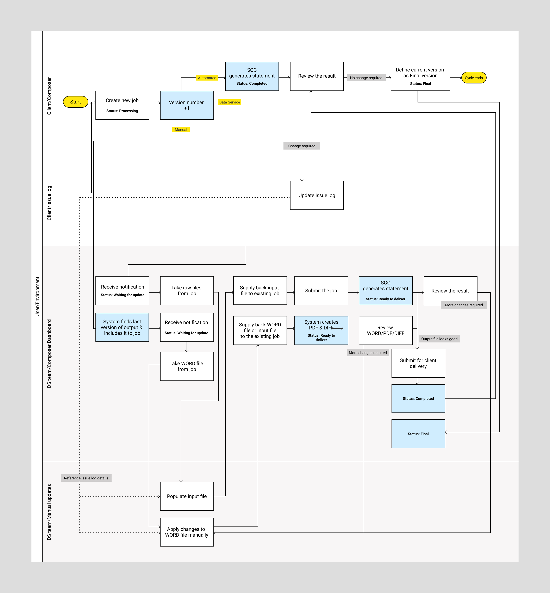
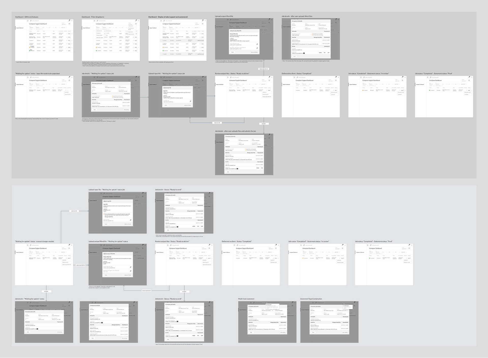
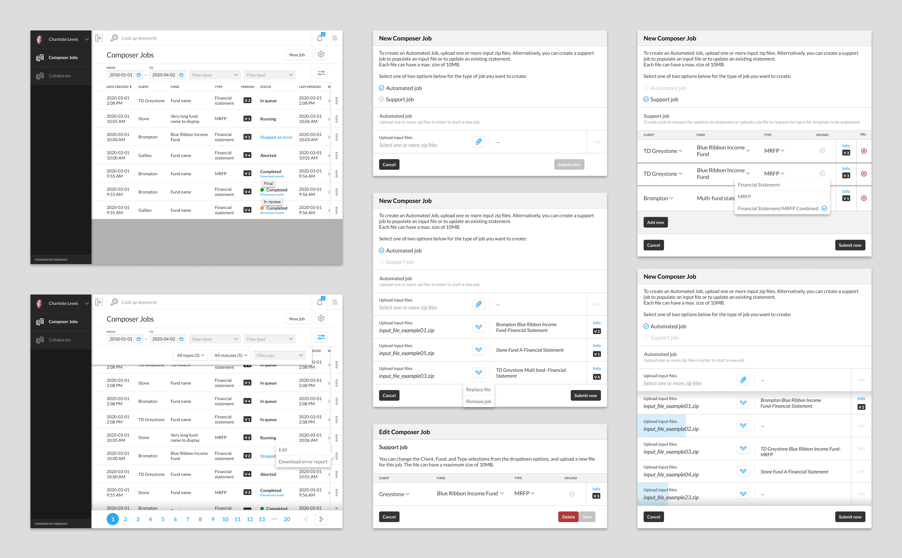

Composer
Composer module is the dedicated Job designed to compose one or more formatted documents from the data taken from various input files. The composer can handle various input files from any sources.
My Role
Lead UX Designer
Process
This is the UX process that I follow when I work on such projects:

User Research
Before digging into creating a design, I started with understanding the users, their goals for using the app, main scenarios and use cases. User goals were mostly gathered by CX team and also from talking to potential users of the app.
User flow
Wireframes
Once the information architecture was finalized, the next step was to create created low-fidelity wireframes and prototype of the app.
High Fidelity Prototypes
After several iterations of my low-fidelity prototype, I applied the branding to my wireframes and fleshed out the details of each page.
